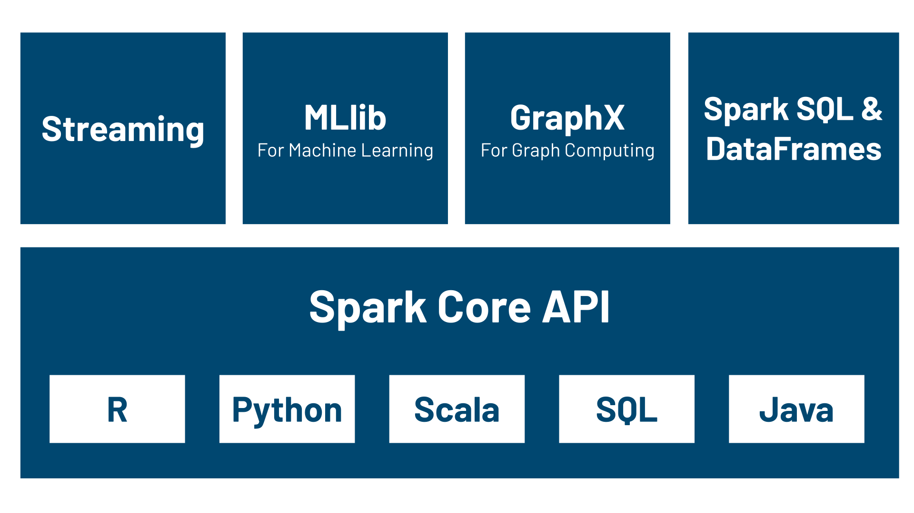

Spark（官网）
1、简介
Apache Spark 是一个开源的分布式计算框架，主要用于大规模数据处理。Spark 提供了高效的计算引擎，支持批处理和流处理，同时还包括机器学习库、图计算库和SQL查询引擎等功能。
2、Spark的核心概念
（1）RDD（弹性分布式数据集）
RDD 是 Spark 中的核心抽象，它代表一个不可变的分布式数据集，可以并行处理。RDD 的数据可以存储在集群的各个节点上，并支持多种操作，如映射、过滤、聚合等。
（2）DataFrame 和 DataSet
- DataFrame：是 Spark SQL 提供的一个数据结构，类似于关系型数据库中的表格。它是一个分布式的数据集合，支持各种 SQL 查询、数据处理和转换操作。
- DataSet：是 DataFrame 和 RDD 的结合。它既具有 RDD 的类型安全（即编译时检查类型），又具有 DataFrame 的优化执行引擎
（3）转换（Transformation） 和 行动（Action）
- 转换：是 Spark 中对 RDD、DataFrame 或 DataSet 进行的操作，它们是惰性执行的，即转换操作不会立即计算结果，而是创建一个新的 RDD、DataFrame 或 DataSet，记录下对原数据集的操作。这些操作会构建起一个执行计划，直到调用行动操作时才会真正执行。
- 行动：是 Spark 中会触发实际计算的操作。它们会返回最终的结果，并且会启动对数据的实际计算过程。行动操作执行时，会计算整个数据集，通常会产生一个输出结果，或者将数据保存到外部存储中。
（4）Spark Streaming
- Spark Streaming 是 Spark 用于处理实时数据流的组件。它将实时数据流分割成小批量的数据块（micro-batch），并利用 Spark 的批处理引擎来处理这些小批量数据。
（5）机器学习库（MLlib）
- MLlib 是 Spark 提供的机器学习库，包含了常见的机器学习算法，如分类、回归、聚类、推荐等。
（6）GraphX
- GraphX 是 Spark 提供的图计算库，支持大规模的图数据处理。GraphX 提供了图的表示和图操作的 API，支持常见的图算法，如 PageRank、连接组件、最短路径等。
3、使用minikube部署Spark
（1）向minikube中导入所需的镜像（这一步在已在上面的Hadoop部署过程中做过了，导入的镜像是一样的，可以跳过）
minikube image load spark-hadoop-numpy:latest
- 进入minikube查看是否导入
minikube ssh
docker images
（2）进入之前所建立的Hadoop集群中的namenode的命令行bash，更改hdfs的权限，让spark有权限访问hdfs，并创建spark-logs目录以存放spark的历史任务日志。下面命令中需要替换为自己的namenode所在pod的名称
kubectl exec -it namenode-78587cfc8f-v4zk6
hdfs dfs -mkdir -p /spark-logs
hdfs dfs -chmod 1777 /
（3）使用spark-yarn.yaml文件部署Spark，并查看pod状态验证其是否正常运行
kubectl apply -f spark-yarn.yaml
kubectl get pods
（4）运行SparkPI示例程序
- Spark示例程序pi通常用于展示Spark的基本功能，通过蒙特卡洛方法来估算圆周率π的值，具体来说，它通过在正方形内随机撒点，并计算这些点中有多少点落在圆内，从而用落在圆内的点数与总点数的比例来估算π
- 进入nodemanager的命令行bash
kubectl exec -it nodemanager-0 -- bash
- 提交spark PI示例作业
spark-submit --master yarn --deploy-mode cluster --class org.apache.spark.examples.SparkPi /opt/spark/examples/jars/spark-examples\_2.12-3.5.1.jar 10
（5）运行k-means算法的Spark版本
- 先退出nodemanager的bash
exit
- 再复制所需的文件到nodemanager中，下面的/home/zhxu/spark需要替换为自己电脑上的路径
kubectl cp /home/zhxu/spark/ nodemanager-0:/opt/spark/work-dir/
- 再次进入nodemanager的bash
kubectl exec -it nodemanager-0 -- bash
- 进入复制的文件夹下
cd spark
- 上传所用的文件到hdfs上
hdfs dfs -put data.txt /input/
- 提交作业
spark-submit --master yarn --deploy-mode client --files config.json --py-files point.py spark.py hdfs:///input/data.txt ./result.txt
- 可以看到，上面的结果对比下面Hadoop中的执行结果，快了很多（实验指南(二)：Hadoop）